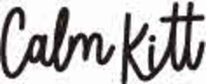
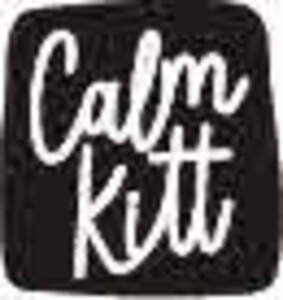
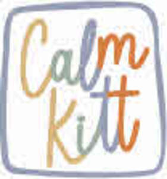
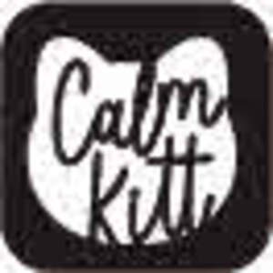

Trade Mark Journal No.2025/042 17 October 2025
UK00004243305 2 August 2025 (9,16,28,41)
Mark 1

Mark 2

Mark 3

Mark 4
Mark 5

- Class 9
- Software; Software testing software; Software reliability software; Computer software; Collaboration software platforms [software]; Computer software packages; Antivirus software; Software for computers; Enterprise software; Antispyware software; Computer software development tools; Plugin software; Multimedia software; System software; Workflow software; Antimalware software; Computer software applications; Programming software; Software applications; Debugging software; Bioinformatics software; Computer antivirus software; Computer application software; Downloadable computer software; Computer software for computer aided software engineering; Compiler software; Software compiler; Computer software platforms; Application software; Encryption software; Server-side software; Networking software; Computer e-commerce software; Computer software programs; Hardware testing software; Graphics software; Interface software; Telecommunications software; E-commerce software; Computer telephony software; Computer software for encryption; Downloadable software; Computer software applications, downloadable; Downloadable computer software applications; Server software; Simulation software; Computer programming software; Computer interface software; Editing software; Computer hardware for use in computer-assisted software engineering; Business software; Platform software; Cryptography software; Operating software; Accounting software; Programs (Computer -) [downloadable software]; Computer programs [downloadable software]; Computer operating software; Downloadable computer security software; Smartphone software; Software suites; Gaming software; Publishing software; Computer firewall software; Intranet software; Embedded software; Security software; Downloadable computer utility software; Downloadable computer software for blockchain technology; Optimisation software; Computer software for advertising; Computer graphics software; Educational computer software; Hardware reliability software; Software development tools; Music software; Mobile software; Utility software; Manufacturing software; Software for smartphones; Computer software [programmes]; Diagramming software; Communications software; Testing software; CAD software; Biometric software; Animation software; Computer game software; Downloadable software applications; Computer software for database management; Business technology software; Downloadable computer software for the management of data.
- Class 16
- Printed matter; Diaries [printed matter]; Planners [printed matter]; Flow sheets [printed matter]; Cartoon strips [printed matter]; Printed matter for instructional purposes; Comic strips [printed matter]; Marine logs [printed matter]; Ships logs [printed matter]; Printed correspondence course materials; Printed paper signs; Printed paper labels; Printed promotional material; Printed answer sheets; Printed booklets; Printed books; Printed paper invitations; Photographs [printed]; Printed photographs; Printed packaging materials of paper; Printed music; Printed material in the nature of color samples; Printed stationery; Printed pamphlets; Printed teaching material; Printed lessons; Printed periodicals; Printed invitations; Printed advertisements; Printed visuals; Forms, printed; Printed forms; Printed cardboard invitations; Printed patterns; Printed publications; Publications (Printed -); Printed brochures; Printed manuals; Printed reports; Printed cards; Printed timetables; Timetables (Printed -); Printed charts; Printed menus; Printed leaflets; Printed lectures; Printed information sheets; Printed coupons; Printed diplomas; Printed instructional material on telecommunications; Printed informational sheets; Printed diagrams; Printed advertising boards of paper; Printed calendars; Sheet music in printed form; Printed horoscopes; Printed plans; Printed educational materials; Printed sheet music; Printed informational cards; Printed flyers; Printed music books; Printed newsletters; Printed teaching materials; Printed tickets; Printed tables; Printed informational folders; Printed publications relating to computers; Printed emblems; Printed stories in illustrated form; Printed guides; Printed curricula; Printed art reproductions; Printed periodicals in the field of music; Printed survey answer sheets; Printed certificates; Printed vouchers; Printed paper signs featuring table numbers for use for special events; Printed luggage labels; Printed consumer reports; Paper for printing photographs.
- Class 28
- Soft toys; Soft sculpture toys; Soft sculpture plush toys; Plush toys; Cuddly toys; Soft toys in the form of animals; Fluffy toys; Smart plush toys; Toys; Bendable toys; Soft toys in the form of elks; Stuffed and plush toys; Stuffed plush toys; Plush stuffed toys; Plastic toys; Squeezable squeaking toys; Stuffed toys; Cloth toys; Bendy balls being toys; Sand toys; Fabric toys; Stuffed bean-filled toys; Plastic toys for use in the bath; Inflatable toys; Smart toys; Fidget toys; Ride-on toys; Wooden toys; Toys for babies; Wind-up toys; Crib toys; Rocking toys; Inflatable thin rubber toys; Toys, games, and playthings; Toys for sandpits; Toys and playthings for pets; Plastic character toys; Rattles [toys]; Plastic models being toys; Toys made of rubber; Water toys; Play mats for use with toy vehicles [playthings]; Plush toys with attached comfort blanket; Play mats incorporating infant toys [playthings]; Squeeze toys; Bouncing toys; Intelligent toys; Windup toys; Toys made of plastics; Magnetic putty being toys; Mobiles [toys]; Bath toys; Toys for infants; Whistles [toys]; Inflatable ride-on toys; Inflatable bath toys; Toys for use in perambulators; Toy dolls; Stuffed animals [toys]; Electronic toys; Toy foam hands; Rubber character toys; Pull toys; Toy balls; Pet toys; Clockwork toys [of plastics]; Bathtub toys; Mechanical toys; Soft tennis balls; Noisemakers [toys]; Outdoor toys; Infant toys; Push toys; Plush dolls; Toys for animals; Baseballs [not soft]; Toys and playthings for pet animals; Dog toys; Crib mobiles [toys]; Toys for dogs; Toy furniture; Toys, games and playthings for pet animals; Radio-controlled toys; Whistling toys; Toys made of bamboo; Toys made of metal; Model cars [toys or playthings]; Toys for birds; Scooters [toys]; Miniature car models [toys or playthings]; Models being toys; Tennis balls [not soft]; Modular toys; Toy tableware; Chewing toys for parrots; Toys for pets; Construction toys; Toys made of wood; Toy hats; Toy prams; Toy putty; Water-squirting toys; Soap bubbles [toys]; Puzzles [toys]; Toy mobiles; Smart robot toys; Educational toys; Pet toys made of rope; Punching toys; Musical toys; Toys for cats; Controllers for toys; Drones [toys]; Toy figurines; Action figures [toys or playthings]; Toy flowers; Tricycles for infants [toys]; Play mats containing infant toys; Toy bakeware and toy cookware; Stuffed toy animals; Luminous toy putty; Toy playsets.
- Class 41
- Educational services; Educational consultancy services; Educational and training services; Educational and teaching services; Business educational services; Religious educational services; Educational information services; Accreditation of educational services; Educational institute services; Educational advisory services; Educational assessment services; Educational services for providing courses of education; Educational examination services; Examination services (Educational -); Education services; Educational services for the clergy; Educational services provided for children; Educational services provided to industry; Educational and training services relating to healthcare; Educational services in the healthcare sector; Educational services relating to business; Technological education services; Exhibition services for educational purposes; Educational services relating to religious development; Musical education services; Medical education services; Educational services for providing courses of instruction; Educational services in the nature of coaching; Educational services relating to sports; Educational services relating to management; Legal education services; Educational and entertainment services, namely, providing motivational speaking services; Educational services for the teaching of languages; Education information services; Education services relating to quality services; Entertainment, education and instruction services; Providing educational entertainment services for children in after-school centers; Educational establishments providing courses of instruction (Services of -); Educational and training services relating to games; Educational services providing workshops in land policy; Educational services providing workshops in property taxation; Educational services relating to cooking; Sporting education services; Educational certification services, namely, providing training and educational examination; Educational services relating to sales training; Educational services provided for teachers of children; Educational services relating to architecture; Educational services provided by schools; Provision of educational services relating to health; Training and education services; Education and training services; Educational services for the dramatic arts; Educational services relating to spiritual development; Educational services provided by a school; Educational services for teaching acting; Education and instruction services; Online education services; Educational services relating to oenology; Educational services providing instruction in property taxation; Educational services providing instruction in land policy; Adult education services; Computer based educational services; Physical education services; Provision of educational services relating to fitness; Kindergarten services [education or entertainment]; Educational services provided by institutes of higher education; Services of schools [education]; Educational services relating to dancing; Dietary education services; Educational services relating to information technology; Educational services in the nature of correspondence schools; Secondary school educational services; Educational services provided by institutes of further education; Educational services provided by colleges; Educational services provided by beauty schools; Sports education services; Linguistic education and training services; Nursery school services [educational]; Educational services relating to beauty therapy; Educational services relating to zoology; Education services relating to the provision of restaurant services; Management of education services; Management education services; Educational and training services relating to sport; Vocational education and training services; Provision of educational entertainment services for children in after school centers; Primary education services; Educational services for teaching transcription techniques; Educational services provided by academies; Educational services provided by universities; Educational services relating to the writing of computer programs; Educational and instruction services relating to sport; Radio services for the provision of educational revision; Educational services in the nature of beauty schools; Cultural services; Education services provided in virtual environments; Educational services relating to brewing; Educational services relating to the teaching of french; Educational services in the nature of correspondence courses; Education services relating to vocational training; Teaching services; University education services; Education services relating to business training; Provision of educational services relating to ecological topics; Education services related to the arts; Educational and instruction services relating to arts and crafts; Career information and advisory services (educational and training advice); Entertainment services; Advisory services relating to education; Club education services; Educational services relating to physical fitness; Educational consultancy; Provision of educational services relating to exercise; Academy services (Education -); Education academy services; Academy education services; Computer education training services; Second language educational services; Education services relating to banking; Recreational services; Provision of educational services relating to diet; Education services relating to industry; Educational examination services (Information relating to -); Education services relating to music; Education services relating to health; Adult education services relating to banking; Provision of educational services relating to biological topics; Education services relating to the horticultural industry; Educational services relating to first aid; Providing facilities for educational purposes; Computer assisted education services; Conducting educational support programmes for healthcare professionals; Vocational training services; Commercial training services; Education, entertainment and sport services; Instructional and training services; Education services relating to sports.
Deborah Richards